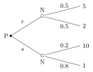

1 Rational decision making
Before several players interact, we need a precise language for one player choosing among alternatives. This chapter builds it: preferences and the utilities that represent them, lotteries and the expected-utility theorem of von Neumann and Morgenstern, risk attitudes, and backward induction for decisions that unfold over time. Everything in later chapters — best responses, equilibria, beliefs — is this single-agent machinery applied to an environment that contains other optimisers.
1.1 What a game is (and is not)
A game, in the technical sense, is a multi-person, multi-objective problem formulated as a mathematical model. It has nothing to do with videogames, sports or gambling, where outcomes are dominated by chance or skill. The defining features are:
- several players, each with an individual objective;
- the outcome depends on the joint choices of all players;
- the rules are known in advance and players are rational.
Engineers usually model single-person problems: maximise a function, meet a goal, achieve efficiency above a threshold. Uncertainty there comes from noise, missing data, approximations. Game theory adds a new kind of uncertainty — each player knows their own move but can only conjecture about the moves of the others — and still manages to produce predictions. Those predictions turn out to be more reliable for algorithms and devices than for humans: an autonomous agent does exactly what its utility prescribes.
Remark (Where game theory is used). Classically in economics (micro: trading, auctions, bargaining; intermediate: markets and firms; macro: countries and monetary authorities). In engineering it is a prediction tool for distributed systems: medium access under congestion, cooperation in networks, the Internet of Things (myriads of devices driven only by their own interest), information security (an adversary that is not fully predictable), reputation and trust in online platforms.
1.2 Some economic background
A few notions recur throughout the course.
- Monopoly vs. market. A rational monopolist maximises its own profit, not social welfare. Competition drives the market-clearing price below the monopoly price, which is why anti-trust authorities punish trusts. Information engineering has notable near-monopolies: utilities, operating systems, wireless telephony, last-mile broadband.
- Substitute goods. Demand usually decreases with price (exceptions: Giffen and Veblen goods). Two goods \(x, y\) are substitutes if the demand for \(y\) increases with the price of \(x\) (butter/margarine, coffee/tea).
- Discount factor. A unit of value today is worth more than the same unit tomorrow — impatience, uncertainty, deterioration, inflation. A payoff of \(1\) received at time \(t\) is valued \(\delta^t\) today, with \(0 < \delta < 1\). An equivalent reading, very natural for networks: \(\delta\) is the probability that the player is still around for the next round (users join a service only for a while).
1.3 Preferences and utilities
A decision problem consists of a set \(A\) of actions, a set of outcomes produced by those actions, and preferences describing which outcomes the decision maker likes better.
A preference on a set of alternatives \(A\) (\(|A| \geq 2\)) is a binary relation \(\succeq\); \(a \succeq b\) reads “\(a\) is at least as good as \(b\)”. It is
- complete if for all \(a, b \in A\), \(a \succeq b\) or \(b \succeq a\) (or both);
- transitive if \(a \succeq b\) and \(b \succeq c\) imply \(a \succeq c\).
A complete and transitive preference is called rational.
Completeness says the decider can always compare; transitivity forbids cycles, which would allow a “money pump” (someone who prefers \(a\) to \(b\), \(b\) to \(c\) and \(c\) to \(a\) will pay to trade around the cycle forever).
A function \(u : A \to \mathbb R\) represents \(\succeq\) if for all \(a, b \in A\) \[a \succeq b \iff u(a) \geq u(b).\]
On a finite set \(A\), a preference \(\succeq\) can be represented by a utility function if and only if it is rational.
Proof. (\(\Rightarrow\)) If \(u\) represents \(\succeq\), completeness and transitivity are inherited from \(\geq\) on \(\mathbb R\). (\(\Leftarrow\)) Define \(u(a) = |\{b \in A : a \succeq b\}|\), the number of alternatives \(a\) beats. By transitivity, \(a \succeq b\) implies that everything below \(b\) is also below \(a\), so \(u(a) \geq u(b)\); by completeness the converse holds. \(\square\)
Utilities are ordinal in deterministic settings: any strictly increasing transformation of \(u\) represents the same preference. For a countable good \(q\) one typically assumes \(u'(q) \geq 0\) (more is better) and \(u''(q) \leq 0\) (diminishing returns).
Remark (Rationality). Hidden in the word “utility” is the assumption that players are rational: they act in their own interest and they are aware of all consequences of their actions. The first point does not mean “selfish” — generosity, fairness or spite can be written into \(u\). The criticism that humans are irrational is a criticism of the model’s accuracy, not of rationality itself, and it is largely irrelevant for algorithms and autonomous agents. The second requirement (full awareness of consequences) is the demanding one.
1.4 Decision trees
A decision is drawn as a tree: the root is the player who moves, branches are the alternatives, leaves carry the utilities. Choosing ravioli (\(r\), utility \(5\)) over soup (\(s\), utility \(1\)) is a fork in the road. If the player has further choices (fish or vegetables after each first course), the tree grows more levels — but a single smart agent can always collapse a single-player tree into one layer by listing every complete plan (\(rf\), \(rv\), \(sf\), \(sv\)) and picking the best. Single-person decision trees are therefore just optimisation problems; things become interesting only with several players.
1.5 Lotteries and Nature
Real outcomes are often random: the canteen’s soup is different every day. Game theory models randomness as the choice of an additional player, Nature, who moves according to a known probability distribution.
A (simple) lottery over the outcomes \(X = \{x_1, \dots, x_n\}\) is a probability distribution \(p = (p(x_1), \dots, p(x_n))\) with \(p(x_k) \geq 0\) and \(\sum_k p(x_k) = 1\). If outcomes depend on an action \(a\), the lottery is conditional, \(p(x_k \mid a)\). A certain outcome is a degenerate lottery with \(p(x_k \mid a) = 1\) for one \(k\).

Figure: choosing between two lotteries. Filled dot: the decision maker; open circles: Nature.
Lotteries can also be compound (Nature moves several times in a row; probabilities multiply along a path) or continuous (a density replaces the distribution, and individual outcomes have probability zero; trees no longer apply but the logic does).
1.6 Expected utility
Which lottery is better: a fair coin between \(5\) and \(2\), or a \(20\%\) chance of \(10\) with an \(80\%\) risk of \(1\)? The standard answer is to compare expected payoffs: \[\mathbb E[u \mid p] = \sum_{k=1}^n p(x_k)\,u(x_k).\] The intuition: if the lottery were repeated \(N \to \infty\) times, the average payoff would approach the expectation. In the example \(\mathbb E[u \mid r] = 0.5 \cdot 5 + 0.5 \cdot 2 = 3.5\) and \(\mathbb E[u \mid s] = 0.2 \cdot 10 + 0.8 \cdot 1 = 2.8\), so \(r\) is preferred.
Is it legitimate to rank lotteries by expected utility? Von Neumann and Morgenstern answered by axiomatising preferences over the set \(\mathcal P(A)\) of lotteries.
For all \(p, q, r \in \mathcal P(A)\) the sets \(\{\alpha \in [0,1] : \alpha p + (1-\alpha) q \succeq r\}\) and \(\{\alpha \in [0,1] : r \succeq \alpha p + (1-\alpha) q\}\) are closed.
Small changes in the probabilities do not flip a strict preference: if I prefer a safe walk in the park to staying home, I still do when there is a tiny probability of being mugged on the way.
For all \(p, q, r \in \mathcal P(A)\) and \(\alpha \in [0,1]\): if \(p \succeq q\) then \(\alpha p + (1-\alpha) r \succeq \alpha q + (1 - \alpha) r\).
Mixing both options with the same third lottery does not change their ranking: if I prefer betting on football to betting on horses, I also prefer “heads: football, tails: roulette” to “heads: horses, tails: roulette”.
If a preference \(\succeq\) on \(\mathcal P(A)\) is complete, transitive, continuous and satisfies independence, then there exists \(u : A \to \mathbb R\) such that for all \(p, q \in \mathcal P(A)\) \[p \succeq q \iff \mathbb E[u \mid p] \geq \mathbb E[u \mid q].\] Such a \(u\) is a vN-M utility; it is unique up to positive affine transformations \(u \mapsto a u + b\), \(a > 0\).
The key structural fact is that expected utility is linear in the lottery: any \(p\) is a convex combination of degenerate lotteries, \(p = \sum_k p_k e_k\), and \(\mathbb E[u \mid p] = \sum_k p_k u(x_k)\).
Under uncertainty, utilities stop being merely ordinal. Replacing the “tasty soup” payoff \(10\) with \(100\) preserves the order of outcomes but can reverse the choice between lotteries. “\(a \succeq b\)” is no longer enough: we also need to know by how much. The same holds later for mixed strategies.
Choose a depth \(d \geq 0\). The effort is \(d^2/2\); the water extracted is \(W(d) \sim \mathcal U[0, 20d]\). The expected utility is \[\mathbb E[u \mid d] = \mathbb E[W(d)] - \frac{d^2}{2} = 10 d - \frac{d^2}{2},\] maximised at \(d^* = 10\) with \(\mathbb E[u] = 50\). Digging \(3.2\) m, for comparison, yields \(32 - 5.12 = 26.88\).
1.7 Risk attitudes
Consider outcomes \(x_1 = 0\), \(x_2 = 1\), \(x_3 = 20\) euro and the lotteries \(p_A = (0, 1, 0)\) (one euro for sure) and \(p_B = (0.95, 0, 0.05)\). Both have expected outcome \(1\) euro. Their expected utilities are \(u(x_2)\) and \(0.95\,u(x_1) + 0.05\,u(x_3)\), which may differ.
A player is risk neutral if they are indifferent between any two lotteries with the same expected outcome; risk averse if they always prefer the degenerate lottery (the sure thing) to a non-degenerate lottery with the same expected outcome; risk loving if they prefer the opposite.
In terms of the vN-M utility of money: linear \(u\) ⟺ risk neutral, concave \(u\) ⟺ risk averse (Jensen: \(u(\mathbb E x) \geq \mathbb E u(x)\)), convex \(u\) ⟺ risk loving. Monotone transformations such as \(x\), \(x^2\), \(\log x\) all represent the same ordering of sure amounts but encode different risk attitudes.
Expected utility theory does not claim that “1 euro for sure” equals “a 50/50 gamble on 2 euros”. It claims that a player whose utility of money is \(u(x) = x\) is indifferent between them. The risk attitude lives inside \(u\).
1.7.1 Measuring risk aversion
For a lottery \(L\) over money, the certainty equivalent \(CE(L)\) is the sure amount the player considers just as good, \(u(CE) = \mathbb E[u(x)]\), and the risk premium is \(\pi = \mathbb E[x] - CE\): what the player would give up to remove the risk. A risk-averse player has \(\pi > 0\) and is therefore willing to buy fair (and even slightly unfair) insurance.
How strongly concave is \(u\)? For a small gamble \(\varepsilon\) with mean zero and variance \(\sigma^2\) around wealth \(w\), a second-order expansion gives \[\pi \approx \tfrac12\,\sigma^2\,A(w), \qquad A(w) = -\frac{u''(w)}{u'(w)},\] the Arrow–Pratt coefficient of absolute risk aversion. Unlike \(u''\) alone, \(A\) is invariant to affine changes of \(u\), as it must be. Two families recur:
| utility | \(A(w)\) | \(R(w) = wA(w)\) | behaviour |
|---|---|---|---|
| \(u = -e^{-aw}\) (CARA) | \(a\) | \(aw\) | premium independent of wealth |
| \(u = \frac{w^{1-\rho}}{1-\rho}\), \(u = \log w\) for \(\rho = 1\) (CRRA) | \(\rho/w\) | \(\rho\) | premium proportional to wealth |
\(R(w)\) is the relative risk aversion, relevant for gambles proportional to wealth. Most people’s absolute risk aversion decreases with wealth: the rich accept bets the poor refuse.
1.8 Decisions over time: backward induction
When the decision maker and Nature alternate, the tree has several decision layers. Suppose ravioli turn out tasty or bland with probability \(1/2\) each; after seeing which, the player may add extra cheese (\(e\)) or not (\(n\)). Cheese is good with probability \(0.6\): it raises tasty ravioli from \(5\) to \(10\) and bland ravioli from \(2\) to \(3\), while bad cheese gives \(0\). Soup is the same lottery as before.
Classify the player’s decision nodes: group 1 contains nodes after which no further decision of the player is possible (only outcomes or Nature’s moves follow); group \(k\) contains nodes followed only by nodes of group \(k-1\) or lower. Solve group-1 nodes by maximising expected utility, replace each by its optimal value, and repeat — the former group-\(k\) nodes become group \(k-1\).
In the example: after tasty ravioli, \(e\) gives \(0.6 \cdot 10 = 6 > 5\), so add cheese; after bland ravioli, \(e\) gives \(0.6 \cdot 3 = 1.8 < 2\), so don’t. The pruned tree has \(\mathbb E[u \mid r] = 0.5 \cdot 6 + 0.5 \cdot 2 = 4 > 2.8 = \mathbb E[u \mid s]\).
If the later decision happens much later, its payoffs are discounted: replace \(10\) by \(10\delta\) and \(3\) by \(3\delta\). The optimal plan now depends on \(\delta\).
Continuous choices over time. When the decision is how much to consume in each period, \(\max \sum_t \delta^{t-1}u(x_t)\) subject to \(\sum_t x_t = W\), the Lagrange conditions equate discounted marginal utilities: \(\delta^{t-1}u'(x_t) = \lambda\). With \(u = \log\) this gives \(x_t \propto \delta^{t-1}\): impatience tilts consumption toward the present, and any extra wealth is spread over all periods (consumption smoothing). Because \(\delta^t\) discounting is time consistent, re-optimising later confirms the original plan.
Sequencing risky steps. If a project needs several independent steps, each succeeding with probability \(p_i\) at cost \(c_i\), doing them one at a time saves the cost of later steps whenever an earlier one fails. This is an option value of waiting. Swapping two adjacent steps shows that step \(i\) should come first iff \(c_i/(1 - p_i) < c_j/(1 - p_j)\): cheap tests that are likely to fail go first.
1.9 The value of information
A rational player maximises expected utility, i.e. makes the right choice on average. Had they known Nature’s choice in advance, they might have chosen differently. How much is that knowledge worth?
Suppose a friend who already ate at the canteen offers to reveal today’s quality. Informationally, this reverses the order of moves: Nature moves first, then the player chooses knowing the result. With the original lotteries (ravioli \(5\) or \(2\) at \(1/2\); soup \(10\) or \(1\) at \(0.2/0.8\), independent):
| ravioli | soup | probability | best choice | payoff |
|---|---|---|---|---|
| 5 | 10 | 0.1 | \(s\) | 10 |
| 2 | 10 | 0.1 | \(s\) | 10 |
| 5 | 1 | 0.4 | \(r\) | 5 |
| 2 | 1 | 0.4 | \(r\) | 2 |
The expected utility with information is \(1 + 1 + 2 + 0.8 = 4.8\); without it, the best one can do is \(3.5\) (choose \(r\)). The value of information is \(4.8 - 3.5 = 1.3\): the most the player should pay the friend.
1.9.1 Imperfect information and Bayes’ rule
Information is usually noisy: a test, a forecast, a friend’s opinion. Let the state be \(\omega\) with prior \(p(\omega)\) and let a signal \(s\) arrive with likelihood \(q(s \mid \omega)\). After observing \(s\), the player should update with Bayes’ rule \[p(\omega \mid s) = \frac{q(s \mid \omega)\,p(\omega)}{\sum_{\omega'} q(s \mid \omega')\,p(\omega')},\] and choose the action that is optimal under the posterior. The value of the signal is \[\mathrm{VI} = \sum_s \Pr(s)\,\max_a \mathbb E[u \mid a, s] \;-\; \max_a \mathbb E[u \mid a] \;\geq 0,\] non-negative because the player can always ignore it. It is zero whenever no signal realisation changes the optimal action: information is valuable only if it can change what you do. Perfect information is the special case \(p(\omega \mid s) \in \{0, 1\}\), and gives an upper bound on the value of any imperfect signal.
1.10 Theory versus practice
Expected utility is a normative benchmark. Experiments document systematic violations, which are worth knowing because they show which axiom fails.
- Allais paradox. Most subjects prefer \(A\): \(1\)M for sure to \(B\): (\(0.89\): \(1\)M, \(0.10\): \(5\)M, \(0.01\): \(0\)), yet prefer \(D\): (\(0.10\): \(5\)M, \(0.90\): \(0\)) to \(C\): (\(0.11\): \(1\)M, \(0.89\): \(0\)). Writing \(A \succ B\) as \(0.11\,u(1) > 0.10\,u(5) + 0.01\,u(0)\) and \(D \succ C\) as the reverse inequality shows no vN-M utility can rationalise both. Both pairs differ by the same common consequence (\(0.89\) of \(1\)M versus \(0.89\) of \(0\)), so the choices violate independence.
- Framing and reference points. Prospect theory (Kahneman and Tversky) fits choices better with a value function defined on gains and losses relative to a reference point, concave for gains, convex and steeper for losses (loss aversion), and with probability weighting that overweights small probabilities.
- Present bias. Exponential discounting \(\delta^t\) is time consistent: a plan made today is still optimal tomorrow. Observed choices often follow \(\beta\delta\) (quasi-hyperbolic) discounting, \(u_0 + \beta\sum_{t\geq1}\delta^tu_t\) with \(\beta < 1\), which produces procrastination and demand for commitment devices.
Game theory nevertheless keeps the rational benchmark: it is precise, it makes falsifiable predictions, and for engineered agents (algorithms, devices) it is literally true by design.
1.11 Exercises
Problems from Tadelis (T), Chapters 1–2. Badia and Marchioro’s handbook starts directly with games; its lottery problems appear in Chapters 2–5.
(T 1.3, Fruit or Candy) A banana costs \(0.50\) and a candy \(0.25\); you have \(1.25\) and value money one-for-one. The first banana is worth \(1.20\) to you and each additional one half the previous; the first candy is worth \(0.40\), each additional one half the previous. (a) How many feasible actions are there? (b) Should you spend all your money? (c) Answer again if candy costs \(0.30\).
Solution.
- Bundles \((b, c)\) with \(0.5b + 0.25c \leq 1.25\): \(b = 0\), \(c \leq 5\); \(b = 1\), \(c \leq 3\); \(b = 2\), \(c \leq 1\) — 12 actions. (b) Net marginal values: bananas \(+0.70\), \(+0.10\), \(-0.20\); candies \(+0.15\), \(-0.05\). Take every positive item: 2 bananas and 1 candy, costing exactly \(1.25\), payoff \(0.95\). Spending everything is a coincidence of prices, not a principle. (c) Now 9 actions, the candy nets \(+0.10\), and 2 bananas plus a candy cost \(1.30\). The best feasible bundles (2 bananas, or 1 banana and 1 candy) both give \(0.80\) and leave money unspent.
(T 1.4) Your payoff from drinking \(a\) litres is \(\theta a - 4a^2\), with \(\theta \in [0.2, 6]\) across the population, larger people having larger \(\theta\). (a) Is there an amount nobody should drink? (b) Optimal \(a\) for \(\theta = 1\) and \(\theta = 4\)? (c) Show smaller people should drink less.
Solution. The first-order condition \(\theta - 8a = 0\) gives \(a^*(\theta) = \theta/8\), increasing in \(\theta\), which is (c). (b) \(1/8\) and \(1/2\) litres. (a) Since \(\theta \leq 6\), \(a^* \leq 0.75\): drinking more than \(0.75\) litres (in particular a full one-litre bottle) is never optimal.
(T 2.2, Recreation Choices) Payoffs (rain, shine): football \((1, 2)\), boxing \((3, 0)\), hike \((0, 1)\); rain has probability \(p\). (a) Which alternative is never chosen? (b) Find the optimal choice as a function of \(p\).
Solution.
- The hike is strictly dominated by football in both states. (b) \(\mathbb E[F] = 2 - p\), \(\mathbb E[B] = 3p\): football for \(p < 1/2\), boxing for \(p > 1/2\), indifferent at \(p = 1/2\).
(T 2.3, At the Dog Races) A \(\$1\) bet on Snoopy pays \(\$2\) if he wins (probability \(0.7\)); a \(\$1\) bet on Lassie pays \(\$11\) (probability \(0.1\)); you may also not bet. You are risk neutral. (a) Best action? (b) You are offered “anti-insurance”: \(\$2\) now in exchange for half of any prize. What do you do?
Solution.
- Net expected values: Snoopy \(0.7 \cdot 2 - 1 = 0.4\), Lassie \(0.1 \cdot 11 - 1 = 0.1\), no bet \(0\). Bet on Snoopy. (b) With the contract: Snoopy \(2 - 1 + 0.7 \cdot 1 = 1.7\), Lassie \(2 - 1 + 0.1 \cdot 5.5 = 1.55\), no bet \(2\). Accept the payment and do not bet (value \(2 > 0.4\)): the contract halves the upside of every bet, which makes all of them unprofitable.
(T 2.6, Real Estate) An impact score is uniform on \([40, 70]\). Approval has probability \(0.35\) if the score is below \(50\), \(0.05\) if it is in \([50, 55]\), and \(0\) above. The development is worth \(\$20\)M to a risk-neutral developer, and the study is legally required. What is the most the developer should pay for the study?
Solution. \(\Pr(\text{approval}) = \frac{10}{30}0.35 + \frac{5}{30}0.05 = 0.125\), so the study is worth \(0.125 \times 20 = \$2.5\)M.
(T 2.8, Juice) A product needs three independent successful steps — ripening (success \(0.7\), cost \(1\)), market research (\(0.3\), cost \(5\)), cold chain (\(0.6\), cost \(0.5\)), in €M — and then yields \(42.5 - 2.5 = 40\). Steps can be run in parallel or sequentially in any order. What should the firm do?
Solution. In parallel: \(0.126 \times 40 - 6.5 = -1.46\). Sequentially in order \((1, 2, 3)\) the expected cost is \(c_1 + p_1c_2 + p_1p_2c_3\), since later steps are paid only if earlier ones succeed. The success term \(0.126 \times 40 = 5.04\) does not depend on the order. Comparing adjacent steps shows that step \(i\) should precede \(j\) iff \(c_i/(1 - p_i) < c_j/(1 - p_j)\): run cheap, likely-to-fail tests first. The ratios are cold chain \(1.25\), ripening \(3.33\), market \(7.14\). The order cold chain → ripening → market costs \(0.5 + 0.6 + 2.1 = 3.2\), giving value \(1.84 > 0\), the best of the six orders (the worst, market first, gives \(-0.37\)). Sequencing turns a loss-making project into a profitable one: an option value of waiting.
(T 2.10, Surgery) Untreated, a patient lives 6 months. Surgery succeeds with probability \(0.7\) (12 months) and otherwise kills the patient immediately. Let \(v(12) = 1\), \(v(0) = 0\). (a) For which \(v(6)\) is surgery optimal? From now on \(v(6) = 0.8\). (b) A free test is positive with probability \(0.9\) if the surgery would succeed and \(0.1\) if it would fail. Find \(\Pr(\text{success} \mid +)\) and the optimal decision. (c) Should the patient take the test if it kills with probability \(0.005\)?
Solution.
- Surgery gives \(0.7\), so surgery is optimal iff \(v(6) \leq 0.7\). With \(v(6) = 0.8\) the patient declines. (b) \(\Pr(+) = 0.9 \cdot 0.7 + 0.1 \cdot 0.3 = 0.66\) and \(\Pr(\text{success} \mid +) = 0.63/0.66 = 0.955 > 0.8\): operate after a positive test. After a negative test \(\Pr(\text{success} \mid -) = 0.07/0.34 = 0.206\): do not operate. (c) Surviving the test is worth \(0.66 \cdot 0.955 + 0.34 \cdot 0.8 = 0.902\), so taking it gives \(0.995 \cdot 0.902 = 0.897 > 0.8\). Take the test: its information is worth more than its risk.
(T 2.11, To Run or Not to Run) Your leg is broken with probability \(0.2\); you win with probability \(0.1\), independently. Payoffs: win and healthy \(100\), win and broken \(50\), lose and healthy \(0\), lose and broken \(-50\); not running: \(-10\) if broken, \(0\) otherwise. (a) Optimal choice? (b) Value of perfect information about the leg? (c) About the race?
Solution.
- Run: \(0.8(0.1 \cdot 100) + 0.2(0.1 \cdot 50 - 0.9 \cdot 50) = 8 - 8 = 0\); don’t run: \(-2\). Run. (b) Healthy (0.8): run, \(10\); broken (0.2): don’t, \(-10\). Value \(8 - 2 = 6\), so perfect information about the leg is worth \(6\). (c) Winning (0.1): run, \(0.8 \cdot 100 + 0.2 \cdot 50 = 90\); losing (0.9): don’t run, \(-2\) (better than running, \(-10\)). Value \(9 - 1.8 = 7.2\), so it is worth \(7.2\).
(T 2.13, Today, Tomorrow, or the Day After) Allocate \(100\) over three periods to maximise \(\log x_1 + \delta\log x_2 + \delta^2\log x_3\), \(\delta = 0.9\). How does the plan change if a gift of \(20\) arrives at \(t = 2\) (no borrowing)?
Solution. The Lagrange conditions give \(x_t \propto \delta^{t-1}\): \(x = \frac{100}{2.71}(1, 0.9, 0.81) = (36.90, 33.21, 29.89)\). With the gift, total wealth \(120\) gives \((44.28, 39.85, 35.87)\). This needs no borrowing since \(x_1 < 100\), so the gift is spread over all periods, including today: consumption smoothing. Re-optimising at \(t = 2\) with the remaining \(75.72\) yields the same \((39.85, 35.87)\). Exponential discounting is time consistent.
1.12 Sources
Prof. Badia, Game Theory slides, decks Gth2001 (introduction, background, preferences, decision trees) and Gth2002 (lotteries, expected utility, risk, backward induction, value of information). Tadelis, Game Theory: An Introduction, Chapters 1–2. Original reference: J. von Neumann and O. Morgenstern, Theory of Games and Economic Behavior, Princeton (1944).